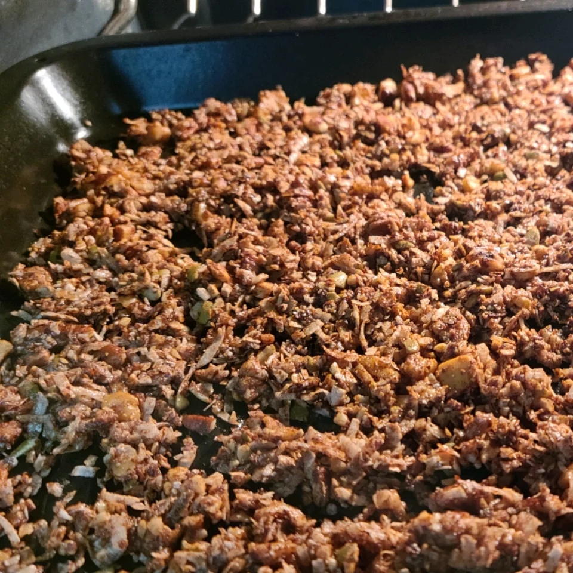

Keto Cinnamon Granola

A tasty lookin' Keto friendly cinnamon granola recipe! Recipe Link.
Recipe logistics
- Prep: 10 mins
- Cook: 8 mins
- Total: 18 mins
- Servings: 8
- Yield: 2 cups
Nutrition
- 183 Calories
- Protein: 3g
- Carbs: 4.3g
- Fat: 18.3g
- Cholesterol: 7.6g
- Sodium: 22.8mg
Ingredients
- 1/2 cup coarsely chopped walnuts
- 1/2 cup coarsely chopped pecans
- 1/2 cup unsweetened shredded coconut
- 1/3 cup sliced almonds
- 1 teaspoon ground cinnamon
- 2 teaspoons granulated erythritol sweetener (such as Swerve®)
- 1 (1 gram) packet granular sucrolose sweetener (such as Splenda®), or more to taste (Optional)
- 2 tablespoons butter, melted
Steps
- Preheat oven to 375 degrees F (190 degrees C).
- Mix walnuts, pecans, coconut, and almonds together in a bowl.
- Stir cinnamon, erythritol, and sucralose into melted butter; pour over nut mixture and stir to coat. Spread granola in a single layer on a baking sheet.
- Bake in the preheated oven until crunchy, 8 to 10 minutes. Remove from oven; stir and allow to cool.